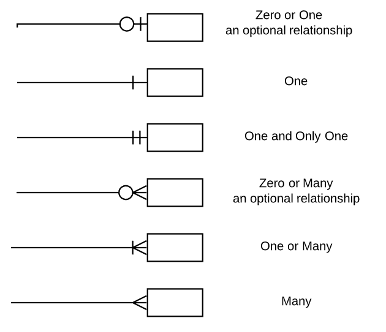

SimpleTrans
Contents
SimpleTrans#
The simple trans package is the result of walking through this chapter in building a radiative transfer model. However, its aim is to provide a straightforward introduction to radiation modelling, and working with outside APIs and databases.
Using the SimpleTrans package#
The SimpleTrans package, which you will have installed if you clone the environment for the book or find it here, link to github… discuss download.
Structure and Overview#
before, diving into using the package, a high level overview of what it does is useful. After you have downloaded the package, it runs calculate_optical_depths_from_hitran.py. When this script is run the absorption spectra from HITRAN are downloaded. Then a relational database is created. This database is populated, by calculating absorption coefficients\((molecules/cm^2)\) and optical depths, of blocks of atmosphere,
where k is the absorption coefficient, \([X]\), is the path integral of molecular density over the block of atmosphere. \begin{equation} [X] = \int_h_i^h_{i+1} n(T,p)dh Where h_i, is the start of the atmosphere block, n is the number density of the molecule. This is repeated over every gas for every altitude for all wavenumbers.
To enable these calculations, there are files which contain functions to help calculate these quantities. isa.py implements the standard atmosphere, to obtain temperature and pressures as a function of altitude and plank.py implements the plank function in a manner which has convenient default behaviour.
Finally, radiative_transfer.py implements a class called atmosphere grid. This models the atmosphere as a coarse altitude grid and a fine wavenumber grid of spacings, \(1 km\) and \(1 cm^{-1}\), respectively. The mean optical depth is calculated for the wavenumber bin and evaluated at the midpoint of the altitude block. The mean value and midpoint provide reasonable approximations to the quantities values in the region.
For these gridded values the two stream equations are solved for the upward and downward fluxes. This produces an output of a flux grid that models the transfer of radiation out of the atmosphere.
Exercises#
Calculate the maximum standard deviation of the averages of the optical depths for \(\textrm{CO}_2\), where the bins are \(1 cm^{-1}\) wide and centred on the integer wavenumbers. Is the standard error large in comparison to the mean?
Using the provided database plot the difference of the absorption coefficient for \(\textrm{CO}_2\) at \(0 km\) and \(1 km\) elevation in ISA atmosphere.
Tip
There are premade queries in the optical_depths_from_hitran.py file, which could be imported or copied and pasted.
A very short introduction to relational databases#
A relational database, is a structured approach to storing data. It describes a group of tables, that are related together. The relationships enable a reduction of data duplication. Typically, these databases are interfaced and queried with using SQL. One of the few programming languages that has been in use for about 50 years.
Note
If you are interested in learning SQL, this textbook is great.
Relational databases reduce duplication, by separating out repeated values, for example, If one was to store some data on a customer in a shop, one might store,
It should be evident that storing all of these fields for each transaction would be wasteful if a customer regularly bought more than one item. When using a relational database the number of repeat entries can be cut down by linking one table that contains information about a customer to another table that contains information about transactions. This can be described in an entity relationship diagram depicted below.
In the schema above, the values in the table boxes indicates the column name and type for each entry. The PK symbol in the last column of the tables indicates if that column corresponds to a primary key. A primary key is a unique entry or unique combination of entries, which identify a row in a table. This is often an integer or a fixed length string. This key can then be used to relate one table to another as a foreign key. The foreign key is the primary key of one table in another table, in our example customer Obi-wan has coustomer_id 1 and this will be the same in both the customer table and the transaction table.
When the database is queried and asked for fields in two tables, for example a query for transactions price, item_name, and card number, for a given transaction id, the item_id and customer_id from the transaction can be used to “join” the tables rows and return all the relevant values, while not storing that data duplicated in one table. The space reduction assumes that an item is sold more than once and some customers buy more than one thing.
The links between the tables are denoted by crow’s foot notation: 
This leaves the question how does one build a database? Conveniently, python itself comes with a SQLite database implementation, and one can build databases, store data and retrieve data, without ever leaving a python script.
The Optical Depths Database#
The database that is created, after the installing the package stores the optical depths and absorption coefficients of \(\textrm{CO}_2\), \(\textrm{CH}_4\), \(\textrm{H}_2\textrm{O}\) and \(\textrm{N}_2\textrm{O}\) in the optical depths table for altitudes in 1km spacings from \(500 m\) to \(30,500 m\), these values correspond to the midpoints of the altitude grid. The wavenumber range recorded is between \(200 cm^{-1} and \)4000 cm^{-1} this provides close to complete coverage of all longwave radiation outgoing from earth.
Each gas is stored with its formulae and ppm concentration. The need for all this data is explored more fully in the next section.
This data is calculated and stored once, because it is computationally expensive to calculate the values each time one wants to calculate them. This does reduce flexibility because there is a defined number of datapoints one can access, however, the pre computation was decided on so that day to day functionality was optimized.
The database is definitely not necessary and one could achieve similar results with a .txt file, however there are about 50 million rows, making it and unwieldy file. Further, the database provides the ability to work with small subsets of the data in a jupyter notebook or python file. Its schema is presented below.